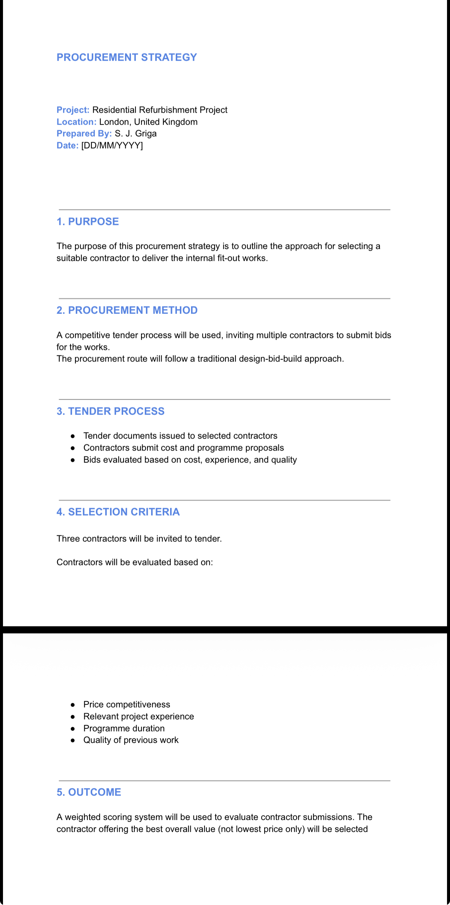
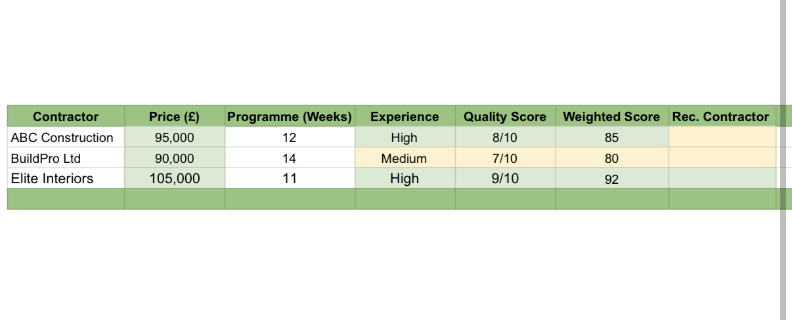
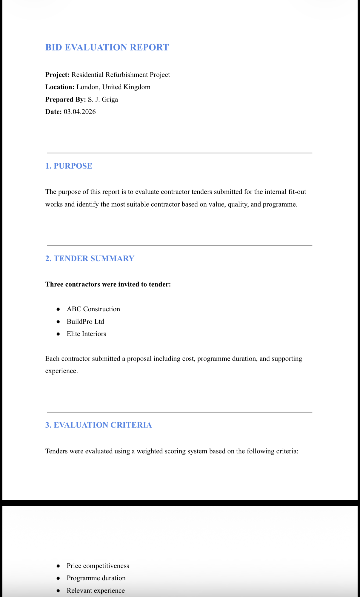
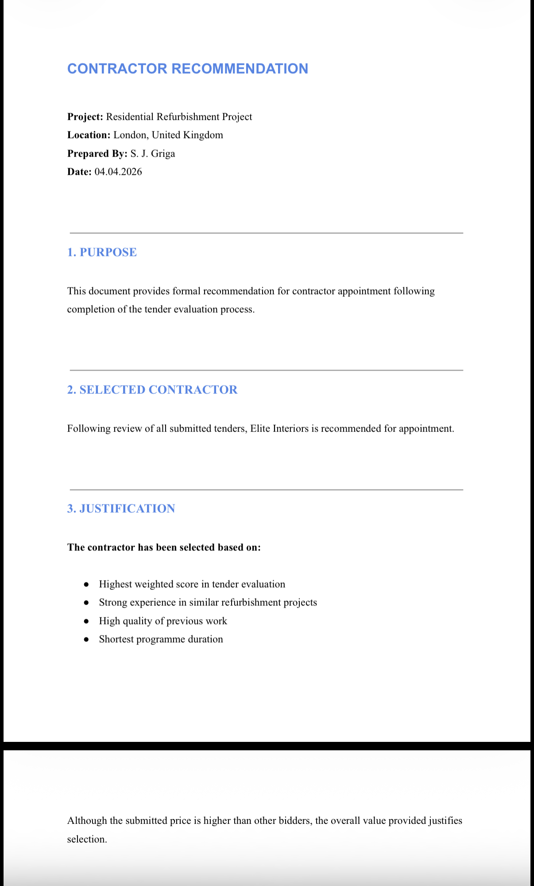

Project Overview
This portfolio simulation demonstrates my ability to manage contractor procurement through a structured tender evaluation process. The project focuses on procurement strategy, contractor comparison, bid evaluation, and final contractor recommendation based on best overall value.
Project Objectives
- Define a suitable procurement strategy for internal fit-out works
- Compare tender submissions using structured criteria
- Evaluate contractors based on price, programme, experience, and quality
- Select the contractor offering best overall value
- Prepare a formal recommendation for appointment
Scope of Works
- Preparation of procurement strategy
- Issue of tender documentation to selected contractors
- Comparison of submitted bids
- Weighted evaluation of contractor proposals
- Formal contractor recommendation for appointment
Key Deliverables
Procurement Strategy
I prepared the procurement strategy to define the tendering approach, procurement route, evaluation criteria, and contractor selection method for the appointment process.
This established a clear framework for how tenders would be invited, assessed, and compared, ensuring contractor selection was based on structured criteria rather than cost alone.
The strategy supported a best-value approach by linking procurement decisions to project priorities such as quality, programme, and contractor capability.
- Defined procurement route and tender method
- Outlined tender process and evaluation criteria
- Established a best-value contractor selection approach

Skills demonstrated: procurement planning, tender strategy, contractor selection method
Tender Comparison Table
I compared contractor tenders against key commercial and delivery criteria, including submitted price, programme duration, relevant experience, and quality score.
A weighted scoring approach was applied to assess each submission consistently and improve transparency in the evaluation process.
This allowed the strongest overall bid to be identified based on best value rather than lowest tender price alone.
- Completed structured contractor comparison
- Applied weighted scoring to tender returns
- Identified the best-value contractor

Skills demonstrated: tender assessment, weighted scoring, commercial comparison
Bid Evaluation Report
I prepared a bid evaluation report to assess each tender submission and justify contractor selection based on best overall value rather than lowest cost only.
The report compared quality, price, programme, and relevant experience, providing a clear rationale for how each contractor performed against the evaluation criteria.
This created a formal record of the evaluation process and supported a transparent procurement decision.
- Compared tender submissions consistently
- Evaluated price, quality, programme, and experience
- Supported recommendation with formal scoring results

Skills demonstrated: evaluation reporting, procurement analysis, contractor assessment
Contractor Recommendation
I issued a formal contractor recommendation to support appointment, confirming the selected bidder and summarising the reasons for selection.
The recommendation was based on the weighted scoring outcome and considered the contractor’s overall capability to deliver the works in line with cost, quality, and programme expectations.
This ensured the procurement decision was clearly documented and aligned with project objectives.
- Identified the recommended contractor
- Justified selection through weighted scoring
- Recorded the formal procurement decision

Skills demonstrated: recommendation writing, contractor appointment, procurement decision-making
Project Outcomes
A clear procurement route and tender process were established, providing structure and consistency for contractor selection.
Three contractor submissions were evaluated through a weighted scoring system, improving transparency and supporting objective comparison.
A best-value contractor was identified and formally recommended for appointment through a documented evaluation process.
- Defined the procurement route and tender process
- Evaluated three contractor submissions using weighted scoring
- Identified the best-value contractor through structured comparison
- Prepared a formal recommendation for appointment
Lessons Learned
This project reinforced that the lowest price does not always represent the best overall value for project delivery.
It also highlighted the importance of weighted scoring in improving transparency, consistency, and justification in contractor selection.
Assessing programme duration, quality, and experience alongside cost strengthens procurement decisions and supports more reliable project outcomes.
- Lowest price does not always equal best value
- Weighted scoring improves transparency in contractor selection
- Programme and quality should be assessed alongside cost
- Formal evaluation reports strengthen procurement decisions
Tools & Methods Used
I used Excel and Google Sheets to prepare the tender comparison table and apply weighted scoring to contractor submissions.
Microsoft Word was used to prepare the procurement strategy, bid evaluation report, and contractor recommendation, supporting consistent and professional documentation.
A structured procurement documentation process improved traceability and supported transparent decision-making throughout contractor selection.
- Excel / Google Sheets (Tender Comparison Table)
- Word (Procurement Strategy, Bid Evaluation, Contractor Recommendation)
- Weighted scoring method for contractor evaluation
- Structured procurement documentation process
Why This Project Matters
This project demonstrates practical procurement and contractor selection skills in a structured and commercially aware way.
It shows how I assess tenders, compare suppliers, balance cost against quality and programme, and make recommendations that support effective project delivery.